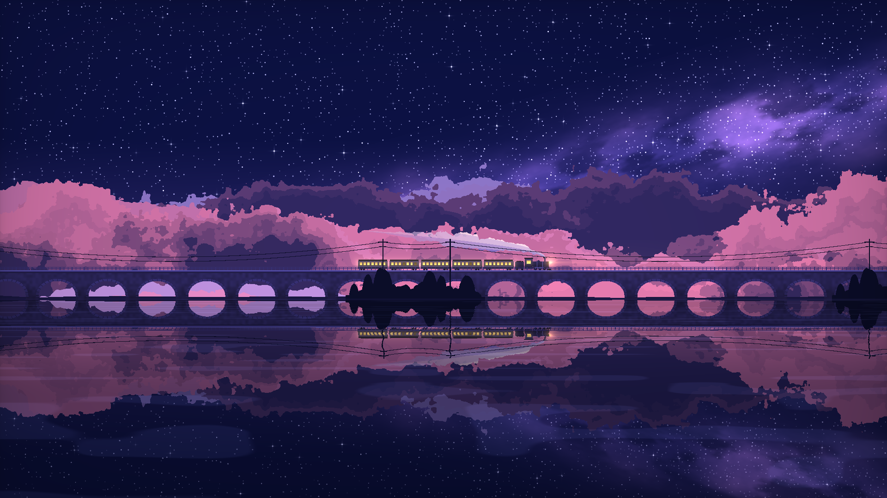

动态壁纸：图片分层与用程序画图
蓝天列车把透明图片与绘图程序合在一起，星空列车则用程序绘制。这里说明分层、遮挡和远近移动速度怎样处理。
两种画面，用了不同做法
Shader 可以理解为负责画面效果的绘图程序，GLSL 是编写这类程序的语言。蓝天案例把透明图片与 Shader 合在一起；星空案例则用 GLSL 绘出场景。

放大查看 ↗为什么远山和近景不能移动得一样快
画面拆成天空、云、远山、桥、列车和水面后，各层不能简单地移动相同距离。远处通常变化较慢，近处变化较快，这就是这里要做的视差。列车经过山体、枝叶和桥梁时，谁在前、谁在后，也要保持一致。
下面用三个系数演示：镜头偏移 camera_offset 同样是 100，天空移动 10，山移动 35，近景移动 80。它是教学代码，不是项目源码摘录。系数决定移动多少，不能自动画出原来被挡住的背景。
camera_offset = 100
parallax = {"sky": 0.1, "mountain": 0.35, "foreground": 0.8}
offsets = {layer: camera_offset * k for layer, k in parallax.items()}
# {"sky": 10, "mountain": 35, "foreground": 80}项目保留的一份技术美术（TA）图层拆解里，有 37 个可见图层。但那份参考图与动态蓝天案例不是同一张图。把原图拼回去对得上，不代表被挡住的背景已经补齐，也不代表画面已经能一直延伸和运动。
画面好看之后，还要检查运动和导出
壁纸运动时，水面倒影要对应选中的对象；近景运动要能重复；镜头前进或倒退时，画面不能突然跳变。导出后还要确认用到的素材都带齐了。
项目提供制作和验收两份 Skill，也就是给助手执行时遵循的操作说明；另有本地运行和导出文档。现有检查适配蓝天案例。其它主题、星空案例和原生 Wallpaper Engine 分别检查到了哪里，需要各看报告，不能用一份“通过”替全部内容作保证。